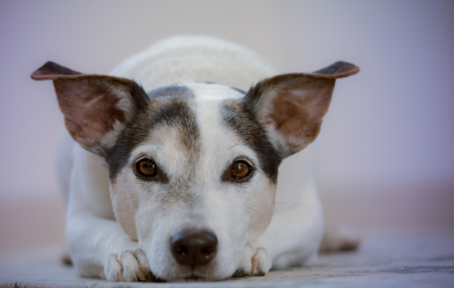

Meus Amigos de Quatro Patas
Vamos conhecer alguns dos animais domésticos mais comuns que vivem conosco!
Cachorro
O cachorro é conhecido como o melhor amigo do homem. Eles são leais, amorosos e proporcionam companhia e segurança aos seus donos.
Vamos conhecer alguns dos animais domésticos mais comuns que vivem conosco!
O cachorro é conhecido como o melhor amigo do homem. Eles são leais, amorosos e proporcionam companhia e segurança aos seus donos.